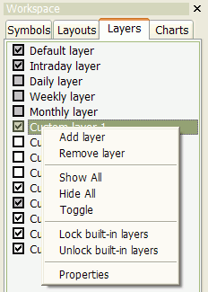

The Layers context menu appears when you right-click on the layer list in the Layers tab of the Workspace pane.Available options:
currently displayed. You can define visibility for each layer
using the "Interval" combo box and "Show/hide automatically" buttons. Note
that there is a *separate* visibility setting for EACH interval. The
layer properties box ALWAYS shows the "monthly" interval at start,
but this is just a startup condition; you just switch to a particular
interval
and modify visibility. To set up a locked layer completely,
you have to set visibility for every layer listed in the "Interval" combo box.
Simply select an interval and choose whether the layer should be shown or hidden
for this interval. Select the next interval and again choose to show or hide. Select
the next, and so on, until you define visibility for all intervals.